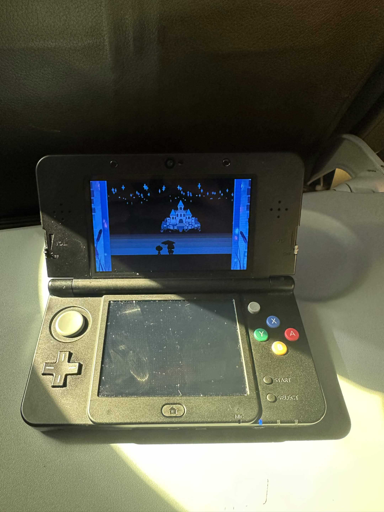
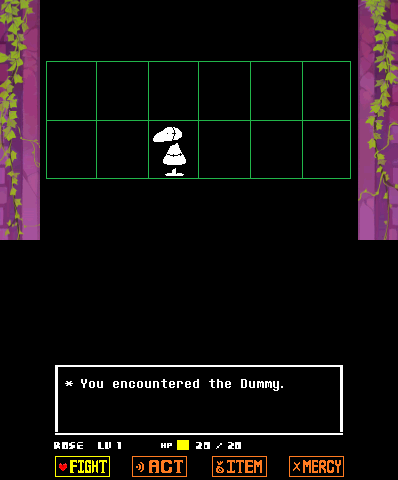
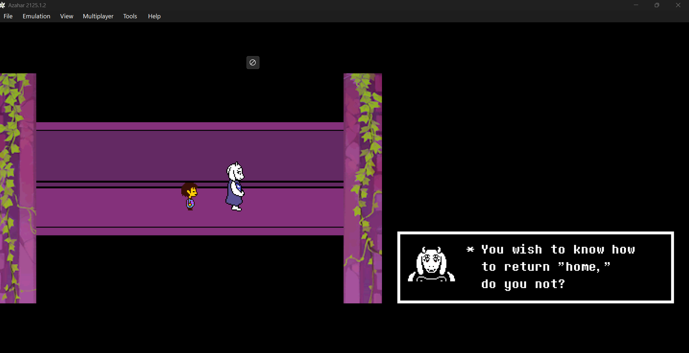
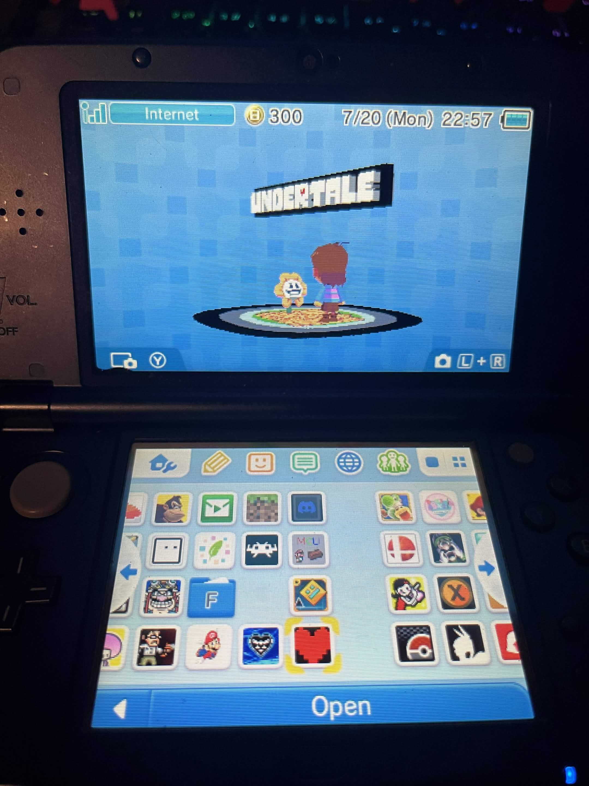
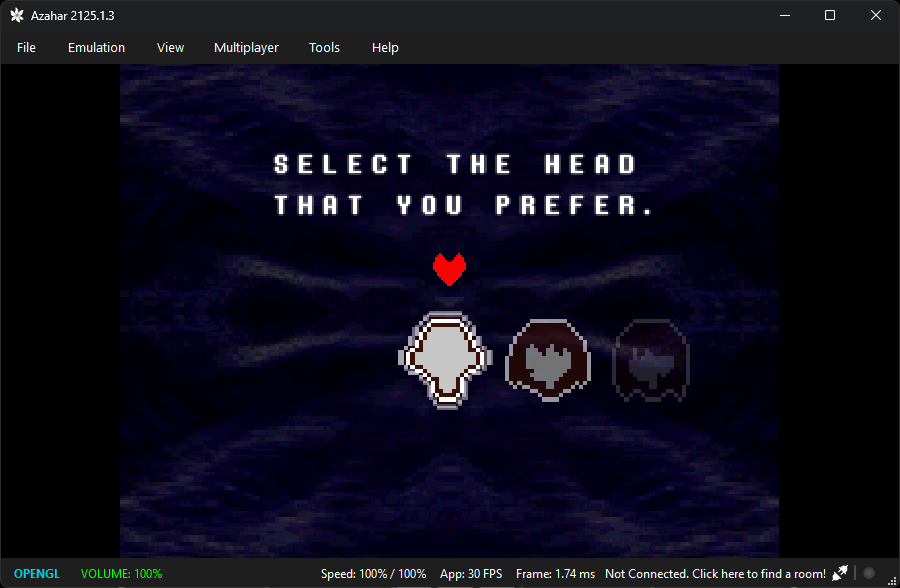
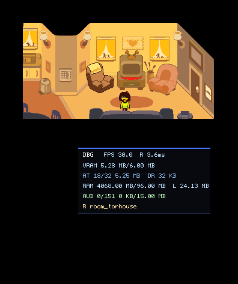
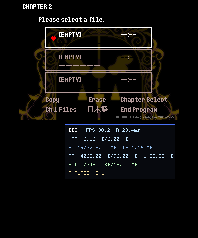
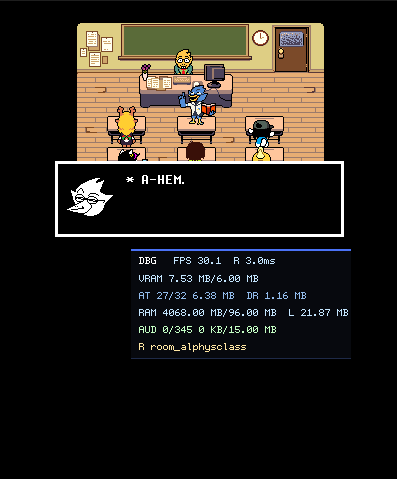
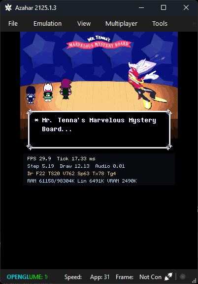

August 2nd Newsletter
Grrrreatings!
Welcome to the first newsletter... hosted on our site.
There's not much to put on here.. maybe you could call this a "Oldsletter?"
All jokes aside, I would like to show a bit of progress on UNDERTALE 3DS.
A bit of old news before we get to the new(ish) news..
UNDERTALE 3DS
As mentioned before, you will not need to have a PC or the patience to go through more than 2 hours to preprocess assets. What is preprocessing? It's just converting your game into something the 3DS can read. There will be a patcher hosted on the website as well as a Windows EXE for preprocessing, or you can wait a LONG time to preprocess on 3DS. Here's what it will look like on web:
Pretty easy, eh?
We posted a video of Omega Flowey running on 3DS. You can watch it below:
A lot of videos lately have been showing one screen only, and no, this does not mean that the game will be top screen only. The reason most of it is on top screen is for testing. It makes it a bit easier for us. (Though, you can turn off the bottom screen in the MENU..)
We had uploaded a few videos of touch, feel free to watch them:
Some more footage..
The Muffet fight. This fight uses Surfaces, which already are VERY useful for DELTARUNE.
The Asriel fight with the rainbow LED:
Little sneak peek of UNDERTALE 3DS on an airplane.. (thanks ralcactus)

Here's what the bottom screen looks like..


..and here's our banner for the game! (thanks jonspeedarts!)

Now, here's the new stuff..
The Undyne fight with touch! This took a bit to perfect, but it works great! Maybe soon I'll even beat Undyne the Undying with it..
Uhhhhh.. blue soul. I still need to work the blue soul out a bit, it's a bit scuffed.
DELTARUNE 3DS
Not much to show, but I would like to show one thing..
Chapter Select! It seems boring, but it works!
Here's a recap of what works so far, too.
Chapter 1:


Chapter 2:


Chapter 3:

Chapter 4 and 5 may be shown soon..
Q&A
I assume most people are in the server, so for those who are, there is a new Q&A channel! Ask questions you have there and they will be answered in the next newsletter!
Goodbye
Thanks for reading the first newsletter on the website!
See everyone next week!